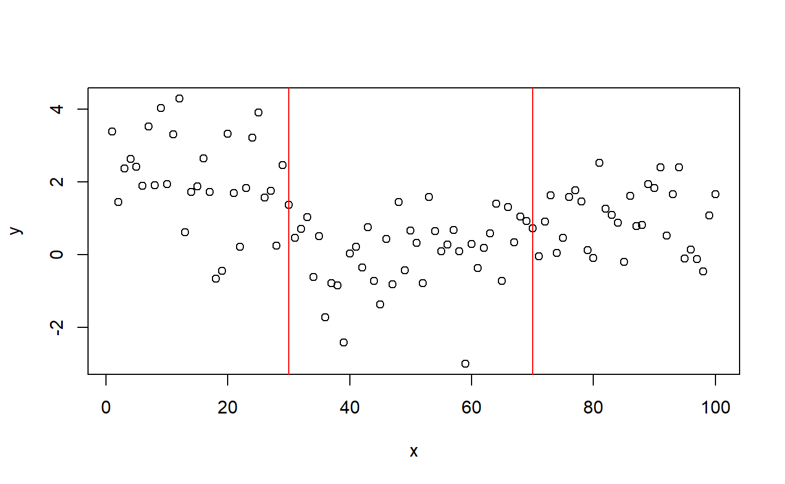
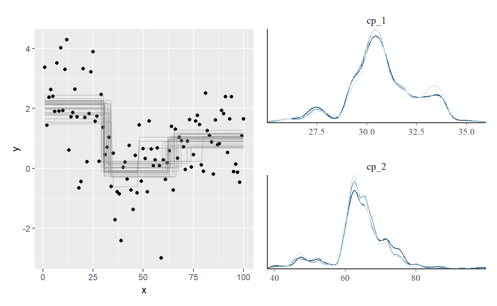
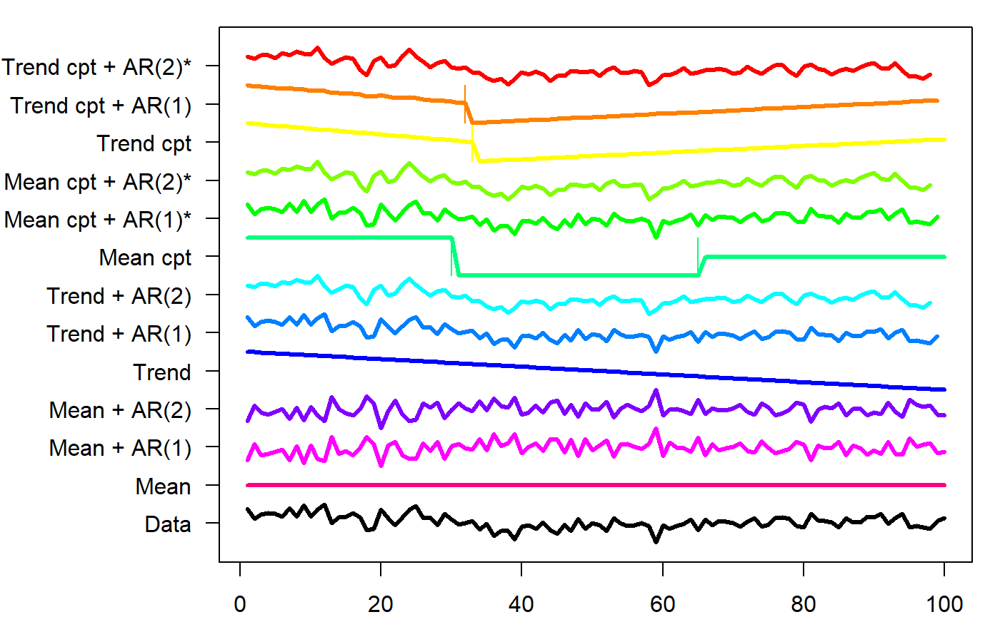
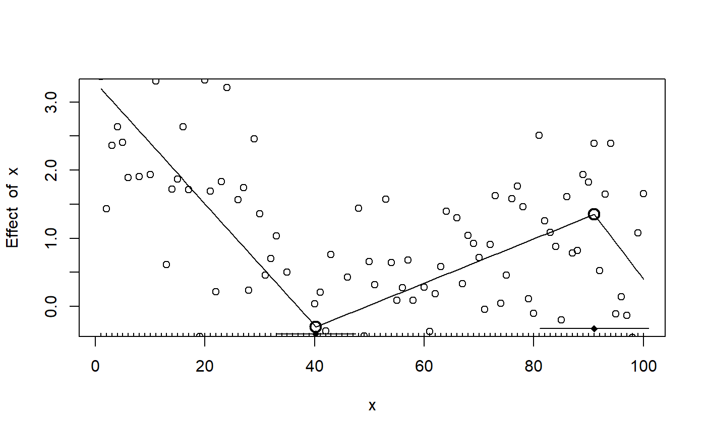
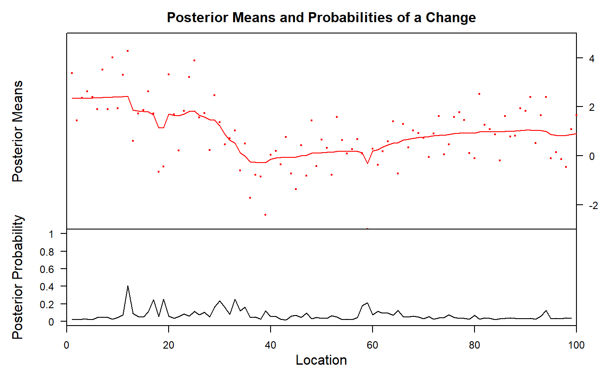

An overview of change point packages in R
Jonas Kristoffer Lindeløv
2020-08-03
Source:vignettes/packages.Rmd
packages.RmdOBS: I have yet to review these packages: not, breakfast, IDetect, trendsegmentR, mosum, ChangepointTesting, changepoint.mv, changepointsHD, changepointsVar, InspectChangepoint, breakpoint, segmentr, Segmentor3IsBack, trendsegmentR, BayesPiecewiseICAR, BayesPieceHazSelect.
There are a lot of change point packages out there already, so why mcp? Here are my (probably biased) thoughts about this. I compiled some tables, summarising change point packages (.xlsx file here). I will demonstrate each of these packages in an applied example below to discuss their merits and shortcomings. I recommend this nice overview of the methodologies used in many of these packages.
Of the packages reviewed here, I think segmented, and EnvCpt are good if the data fits what they can model, and mcp is a more capable and general-purpose package at the cost of speed. You can see the immediate roadmap for mcp at the GitHub issues tracker.
Modeling options
How much flexibility does the package allow for modeling the system, you’re studying? A clear difference here is between packages that allow you to specify the number of change points, and packages which infer the number of change points automatically (using some criteria), captured in the N column below.

Inference
What can you learn, once the model has fitted? While all packages return the estimated Change Points, few return an index of uncertainty around that estimate (CP CI: confidence intervals, highest-density intervals, or posterior densities). Sometimes, it may not even be the change point that is of interest, but rather the parameters of the segments in between (params, params CI). Finally, you may want to compare models, e.g., testing whether a change point is present or not, or testing the nature of the segments between change points (hypothesis tests).
Note that EnvCpt returns one log-likelihood per model, which one then could do testing on. segmented returns AIC and deviance, so ditto here. However, this is something you would have to do yourself. mcp explicitly supports and recommends workflows for detailed model comparisons.

Other conveniences
This is a list of other functions, which I find useful on other statistics packages, including simulating data, getting fitted and predicted values given the model, and an assessment of speed. The option to include prior knowledge could be important in some situations.

Unique features of mcp
- Manually specify the segment structure. Other packages allow for specifying segment structure, but it has to be shared for all segments. Read more about the formula syntax in
mcp. - Posterior distribution for each change point. This matters since they rarely conform to known distributions so confidence intervals can be misleading.
-
varying change points: To my knowledge, no other package implements varying change points, i.e., allowing by-group differences in change points while sharing all other parameters. Read more about varying change points in
mcp. - Sharing and fixing parameters to values and other parameters as discussed under priors in mcp.
-
Per-segment regression on variance and autocorrelation via the
sigma()(read more here) andar()(read more here) terms, also allowing for more advanced change points involving, e.g., a change in autocorrelation strength. -
Explicit priors:
bcpis the only other Bayesian change point package I know of. It contains a few high-level prior parameters, but not for specific parameters such as where change points are expected to occur etc. Read more about priors in mcp for more. -
Prior and posterior predictive checks. In general, most other packages have limited or no model checking functionality. The default
plot.mcpfitis inherently a visual predictive check and can be applied to priors (mcp(..., sample = "prior")and posteriors. Of course inspecting Gelman-Rubin statistics and effective sample sizes insummary.mcpfit, as well as trace plots (plot_pars(fit, type = "trace")), also go a long way. - Flexible hypothesis testing using
looandhypothesis, including testing the existence of a change point. Most other packages stop at estimation, though some provide p-values. Read more about hypothesis testing and model comparison usingmcp.
Recommendation
Let me go all-out on my ego-serving bias and say that mcp is the best package unless:
-
You have a lot of data and limited time: While
mcpis reasonably fast for typical problems, MCMC sampling is slower than analytical and specialized solutions. For datasets > 20.000 points and a complicated model, it may takemcphours (but not days) to fit. See tips and tricks how to speed upmcp. Briefly, run in parallel and lower the number of iterations: (mcp(..., cores = 4, iter = 1000, adapt = 400). -
You want to automatically detect a large number of change points: Most packages does automatic change point detection. This is not a space that
mcptries to fill. But beware that many of the automatic procedures did not capture a change point in the worked examples below. If recommendsegmentedfor the models it “understands” followed byEnvCptand perhapsbcp. -
Multivariate:
mcponly does univariate regression, both for \(y\) and \(x\). This will be implemented if there is a popular request for it. Don’t hesitate to raise an issue on GitHub. For now,bcpseems like the best option to me.
A simple dataset to compare packages
As a simple example, we simulate some intercept-only data with change points at 30 (from mean=2 to mean=0) and 70 (to mean=1) and a residual of 1 SD.
# Simulate set.seed(42) # I always use 42; no fiddling df = data.frame( x = 1:100, y = c(rnorm(30, 2), rnorm(40, 0), rnorm(30, 1)) ) # Plot it plot(df) abline(v = c(30, 70), col="red")

mcp
mcp needs no further introduction. We fit the three-plateaus model with default priors:.
library(mcp) model = list(y~1, 1~1, 1~1) # three intercept-only segments fit_mcp = mcp(model, data = df, par_x = "x") summary(fit_mcp)
## Family: gaussian(link = 'identity')
## Iterations: 9000 from 3 chains.
## Segments:
## 1: y ~ 1
## 2: y ~ 1 ~ 1
## 3: y ~ 1 ~ 1
##
## Population-level parameters:
## name mean lower upper Rhat n.eff
## cp_1 30.665 27.06 33.99 1 1543
## cp_2 63.780 46.99 76.41 1 803
## int_1 2.045 1.65 2.46 1 4238
## int_2 -0.072 -0.49 0.41 1 1278
## int_3 0.913 0.52 1.30 1 2063
## sigma_1 1.063 0.91 1.22 1 3721The summary shows good parameter recovery, though the second change point is detected a bit early. This is understandable if you look at the data, and the true change point is still within the highest density interval.
Plotting the posterior distributions of the change points reveal that they are not well represented by a Gaussian or other known distributions. Therefore, confidence intervals are likely to be meaningless for this problem.
library(patchwork) plot(fit_mcp) + plot_pars(fit_mcp, pars = c("cp_1", "cp_2"), type = "dens_overlay")

mcp takes around 6 seconds to fit this example, which is the slowest of all the packages considered here. You can bring that down to 2.5 seconds by running in parallel, using mcp(..., cores = 3) or for the full session using options(mc.cores = 3).
EnvCpt
EnvCpt can detect change points in mean and variance (not separately), slopes (“trends”), and AR(1)/AR(2), as well as conveniently fitting various models without change points. It automatically infers the number of change points. Unless otherwise instructed (through models argument), EnvCpt fits all models to the data, allowing you to pick one. It allows
library(EnvCpt) fit_envcpt = envcpt(df$y) # Fit all models at once fit_envcpt$summary # Show log-likelihoods
This can be used to maximize the log-likelihood. Of interest here is meancpt. The documentation says that it calls changepoint::cpt.meanvar, modeling a simultaneous change in mean and variance. Curiously, changepoint::cpt.meanvar(df$y) only finds one change point when called directly (see below), but the output matches changepoint.np::cpt.np(df$y)@cpts, so I suspect that this function is used instead. EnvCpt has a nice plot of all the models:
plot(fit_envcpt)

Digging into the meancpt, we get maximum-likelihood estimates of the change points and the parameters of each segment.
fit_envcpt$meancpt@cpts
## [1] 30 65 100fit_envcpt$meancpt@param.est
## $mean
## [1] 2.06858683 -0.07385687 0.96511049
##
## $variance
## [1] 1.5225923 1.0064793 0.6442151I think the change point at x = 100 should just be ignored. We see that it approximately identifies the change points, though without intervals.
segmented
segmented seems to be the most popular package for change point analysis. It has a very shallow learning curve combined with great modeling flexibility. You simply specify your model in lm, glm, Arima, and also work for e.g. coxph (Cox proportional Hazard). Supply it to segmented which then segment your data along the x-axis and applies the linear model in each segment. The trick is identifying the locations where this split works the best. The positive consequence is that you get great modeling flexibility with GLM, AR(1) models, etc.
The downside is that you can only have one kind of segments and (for some reason) it ignores the intercepts on anything but the first segment. Only (joined) slopes are supported in segment 2+. Unfortunately, this means that segmented fails for the present changing-intercept data. In my limited testing, it also ignores quadratic and other terms, so even though the design philosophy is excellent, you have to carefully double-check whether it actually models what you asked it to.
segmented is otherwise well developed with prediction functions, (frequentist) intervals, plots, etc. so if you have large datasets with impermissible long run times in mcp and it matches what segmented can model, it is a good option.
Enough talk:
library(segmented) fit_lm = lm(y ~ 1 + x, data = df) # intercept-only model fit_segmented = segmented(fit_lm, seg.Z = ~x, npsi = 2) # Two change points along x summary(fit_segmented)
##
## ***Regression Model with Segmented Relationship(s)***
##
## Call:
## segmented.lm(obj = fit_lm, seg.Z = ~x, npsi = 2)
##
## Estimated Break-Point(s):
## Est. St.Err
## psi1.x 40.217 3.659
## psi2.x 91.000 4.989
##
## Meaningful coefficients of the linear terms:
## Estimate Std. Error t value Pr(>|t|)
## (Intercept) 3.28673 0.33873 9.703 7.86e-16 ***
## x -0.08916 0.01440 -6.192 1.55e-08 ***
## U1.x 0.12164 0.01770 6.871 NA
## U2.x -0.13783 0.11618 -1.186 NA
## ---
## Signif. codes: 0 '***' 0.001 '**' 0.01 '*' 0.05 '.' 0.1 ' ' 1
##
## Residual standard error: 1.051 on 94 degrees of freedom
## Multiple R-Squared: 0.4154, Adjusted R-squared: 0.3843
##
## Convergence attained in 1 iter. (rel. change 9.9261e-06)As expected, the change points are off (psi1.x and psi2.x). The default plot is sparse, but you can quickly add more info:
plot(fit_segmented) points(df) lines.segmented(fit_segmented) points.segmented(fit_segmented)

Because the fitted objects returned by segmented contains aic, deviance, etc. it is in principle possible to do model comparison. Here is a BIC-based Bayes Factor testing whether there is one or two change points in the data:
fit_segmented_1 = segmented(fit_lm, seg.Z = ~x, npsi = 1) BF = exp((BIC(fit_segmented) - BIC(fit_segmented_1))/2) # From Wagenmakers (2007) BF
## [1] 21.87528We can do the same using mcp:
model_1 = list(y~1, 1~1) fit_mcp_1 = mcp(model_1, data = df, par_x = "x") fit_mcp_1$loo = loo(fit_mcp_1) fit_mcp$loo = loo(fit_mcp) loo::loo_compare(fit_mcp$loo, fit_mcp_1$loo)
## elpd_diff se_diff
## model1 0.0 0.0
## model2 -7.7 3.1While segmented prefers the one-change-point model, mcp prefers the (true) two-change-point model. Again, the models compared here are very different since segmented does inference on a slope-only model.
strucchange::breakpoints
strucchange::breakpoints() is a lot like segmented. The difference is that (1) it is limited to gaussian residuals, and (2) it actually models intercepts, quadratic terms, etc. It scans through fits with 1, 2, 3,… N break points and determine where the optimal break points between this number of segments would lie. For each model it computes the Residual Sum of Squares (RSS; monotonically smaller with increasing N) and the Bayesian Information Criterion (BIC; has a minimum) for each N. It selects the model with the smallest BIC.
For an intercept-only model (y ~ 1) it correctly detects the two change points with estimates similar to mcp. As with most other packages, there are no intervals on the change points nor estimates of the parameters of the segments in between.
library(strucchange)
## Loading required package: sandwichfit_bp = breakpoints(y ~ 1, data = df, breaks = 2) summary(fit_bp)
##
## Optimal (m+1)-segment partition:
##
## Call:
## breakpoints.formula(formula = y ~ 1, breaks = 2, data = df)
##
## Breakpoints at observation number:
##
## m = 1 30
## m = 2 30 65
##
## Corresponding to breakdates:
##
## m = 1 0.3
## m = 2 0.3 0.65
##
## Fit:
##
## m 0 1 2
## RSS 177.7 122.3 103.5
## BIC 350.5 322.4 314.8Reassuringly, for y ~ 1 + x it “recommends” the same single change point that segmented found for this model.
cpm
cpm is an intercept-only (in mean and variance) package, so it cannot model slopes. It can detect single change points via detectChangePoint and multiple change points via processStream. processStream is an automatic change point detection, using a p-value threshold to determine if a candidate should be marked as a hit. Multiple ways of computing p-values (cpmType) are available. In my limited testing, they return similar change points, though not identical.
library(cpm) #fit_cpm = detectChangePoint(df$y, cpmType = "Student") # a single change point #fit_cpm = processStream(df$y, cpmType = "Mann-Whitney") # Detects three fit_cpm = processStream(df$y, cpmType = "Student") # Multiple change points fit_cpm$changePoints
## [1] 30 62It detects two change points, which is good. No intervals are returned and no plot functions are provided. The second change point is estimated a bit further away from the true value than mcp.
changepoint and changepoint.np
changepoint is focused on intercept-only changes. It can estimate changes in means (cpt.mean), variance (cpt.var), or both (cpt.meanvar). It is semi-automatic in that you can set the number of change points using parameter Q and this defaults to five. It can recover ML estimates of the intercepts. It does not estimate uncertainty, nor model checking. It only takes a response variable, so the change point is the data index, not the point on an x-axis. Make sure that your data is ordered. In our case it is ordered and we have 1 data point at each x, so it is optimal for changepoint.
It detects the first change point, but not the second.
library(changepoint) fit_changepoint = cpt.mean(df$y) # Return estimates c(ints = param.est(fit_changepoint)$mean, cp = cpts(fit_changepoint))
## ints1 ints2 cp
## 2.0685868 0.4456268 30.0000000Plot:
plot(fit_changepoint)

The package changepoint.np extends changepoint by providing a non-parametric version. It is unclear which of the changepoint functions are extended, but it manages to find both change points to a good precision. As with many other packages, no intervals are provided. As mentioned earlier, I suspect that EnvCpt uses this function under the hood.
changepoint.np::cpt.np(df$y)@cpts
## [1] 29 65 100bcp
bcp is the only other Bayesian package in the game. It automatically detects change points and segment types, though you can use the parameter d to increase the prior probability of intercept-only models. It provides estimates of means and probability of change point at each x-coordinate. It has little additional functionality. The summary method conveys the same as the plot, so let’s stick to the plot.
We see that it vaguely captures the change point at x = 30, and has some smeared-out probability around x = 60 (mcp detected a single change point at x = 64 here). bcp has some “false alarms” at x < 20.
ecp
ecp contains six functions to detect change points. It is clearly built for multivariate data, but can take univariate too. Of the six functions, I have not managed to get e.agglo working for df, but here I demonstrate the other five. The resulting information is sparse. It detects one of the two change points, but not both (with the exception of e.divisive, which returns four),
df_ecp = as.matrix(df$y) fit_ecp1 = ecp::e.cp3o(df_ecp, K = 2) # maximum 2 change points fit_ecp2 = ecp::e.cp3o_delta(df_ecp, K = 2) # maximum 2 change points fit_ecp3 = ecp::e.divisive(df_ecp, k = 2) # 2 change points. Ignored??? fit_ecp4 = ecp::ks.cp3o(df_ecp, K = 2) # maximum 2 change points fit_ecp5 = ecp::ks.cp3o_delta(df_ecp, K = 2) # maximum 2 change points # Show the change point estimates str(list( e.cp3o = fit_ecp1$estimates, e.cp3o_delta = fit_ecp2$estimates, e.divisive = fit_ecp3$estimates, ks.cp30 = fit_ecp4$estimates, ks.cp3o_delta = fit_ecp5$estimates ))
## List of 5
## $ e.cp3o : int 31
## $ e.cp3o_delta : int 60
## $ e.divisive : num [1:4] 1 31 63 101
## $ ks.cp30 : int 31
## $ ks.cp3o_delta: int 31TSMCP
Short for “Time-Series Multiple Change Point”. The output is a single number (!). For the problem at hand, changing method makes no difference. For many other c (c = 0.3, c = 4), it fails to find any change points at all. There is also TSMCP::cpvnts() to model AR(N), but I have failed to make it find any change points in the present data set.
It finds the change point at x = 30, but not the second change point at x = 70.
TSMCP::tsmcplm(df$y, X = NULL, method = "adapt", c = 1)
## [1] 30robts::changerob
robts is about robust time-series regression. It is not on CRAN, so it has to be installed using install.packages("robts", repos="http://R-Forge.R-project.org"). I fail to install the dependencies, and development of the package seems to have stopped around 2014. It won’t be covered further here.
Packages doing only one change point
-
strucchange::Fstats: Returns the estimated change point (one number), and nothing else.strucchange::Fstats(y ~ 1, data = df)find the change point at 30 in the present data. -
SiZer::piecewise.linear: Returns a change point and parameter estimates, optionally with an interval. Call likepiecewise.linear(df$x, df$y, CI = TRUE). Only joined slopes are supported which makes it misestimate the change point in the present data 39 [36.5, 47], but it is consistent withsegmentedwhich uses a similar model. -
easyreg::bl. -
lm.br::lm.br. Choose between line-line, line-plateau, or plateau-line. Yields confidence intervals. All of these are non-suitable for the present plateau-only model.lm.brstands out with the following features: (1) it can take multiple predictors, and it uniquely only models change point over just one of them, keeping the others constant. In comparison,segmentedmodels changes in everything, as far as I understand it. (2) It can take known variance. (3) It can take data weights.
Packages doing only fixed change points
As explained in the article on mcp formulas, fixed change points can be implemented in almost all regression functions. You simply have an indicator variable saying whether there has been as shift at the corresponding x-value and use it like lm(y ~ 1 + x * I(x > 30), data = df). Or if you don’t want a carry-over effect from the first segment, do lm(y ~ 1 * I(x < 30) + x * I(x >= 30), data = df). This will work for most regression packages in R, including survival and lme4.
Some packages include this in a way where you don’t have to code your indicators yourself, including:
-
scan::plmandscan::hplm. To get started here, make sure to transform your data to ascan::scdfobject.
Others
I have yet to test these:
-
TSISandsegmenTiermay be coerced to do change point analysis, though it is mean for much more complicated switch point models in gene expression analysis. It’s primary interface is a Shiny App. -
plrs::plrs. Piecewise Linear Regression, targeted at DNA and gene expression. May also be coerced into simpler problems.